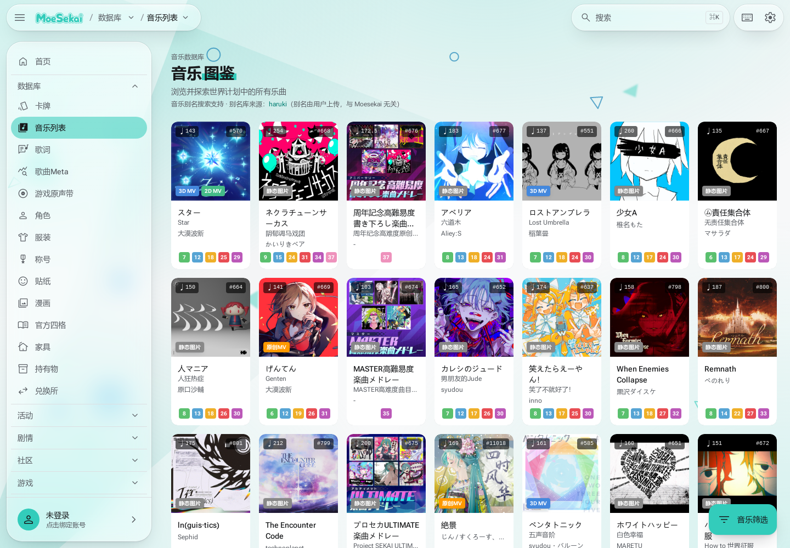
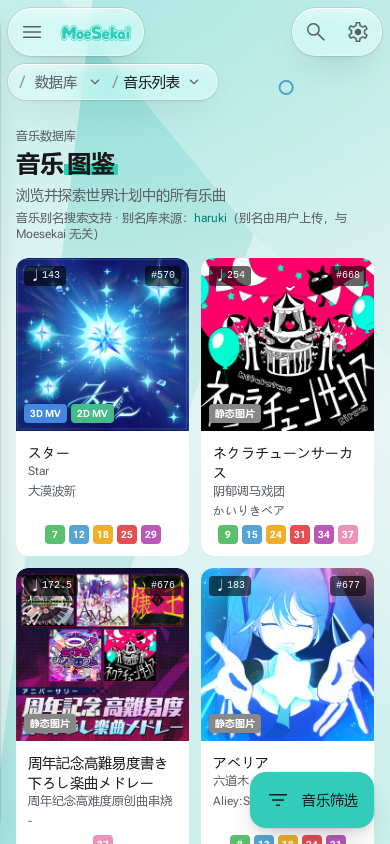

首页：主题间留白，组内集中
123
- 轮播与「最新」之间有独立停顿借鉴主题切换的节奏。Viewer 用 28–44px 的主题间距换题，不复制轮播或扩大 Hero。
- 组标题贴近所属内容「最新卡牌」与卡片行共享左边线；标题到内容的距离小于上个主题到本组的距离。Viewer 推荐标题和结果作为同一组。
- 导航与正文有独立边界左栏与主内容保持连续分隔。Viewer 延续原导航，不把每一层正文都包进卡片。


音乐图鉴：入口精简，内容开始得早

123- 一个标题组说明当前页面数据库眉题、名称、简短说明集中在一起；下方直接进入内容。Viewer 练习页删掉重复英文眉题和四步流程，避免连续开场。
- 标题组到列表的换段留白说明结束后只有一次明确间隔，没有额外欢迎卡或功能说明面板。
- 封面、名称、元信息属于一个对象卡片内信息更紧，卡片间独立。只借鉴对象分组；七列密度、截断长标题与彩色难度徽标不作为 Viewer 标准。


手机首页：沿同一条内容轴逐组展开
123
- 轮播结束后再进入新主题桌面主题的切换关系在手机上仍成立；不是把所有组件等距竖排。
- 组标题与下一排卡片紧邻「最新卡牌」承接卡片行；单行标签不再承担另一个大标题。
- 空状态本身也占空间这块空白是活动空状态容器，不作为值得复制的呼吸感。Viewer 不为无内容状态制造高白卡。


手机音乐图鉴：说明一次，随后交给内容

123- 一个标题与说明组主名称的字号突出，解释集中于其下。Viewer 用一条事实摘要承接成长图表。
- 说明与内容之间有单次停顿留白的作用是切换阅读对象，后续连续重复的卡片采用较紧行距。
- 封面优先，文字跟随对象两列卡片内围绕同一歌曲组织。Viewer 保持自己的谱面和成绩布局，不复制品牌、卡绘或两列组件。